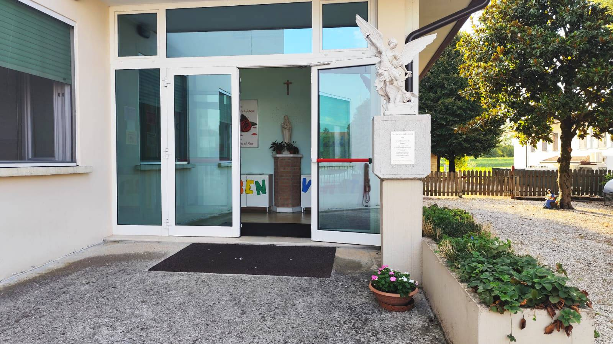
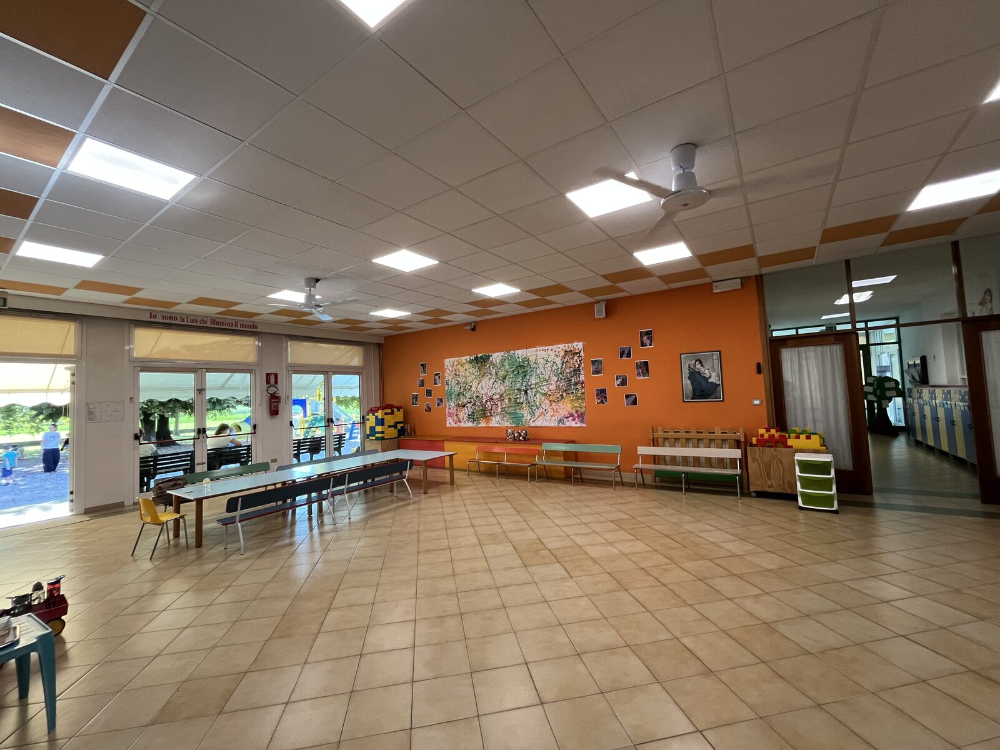
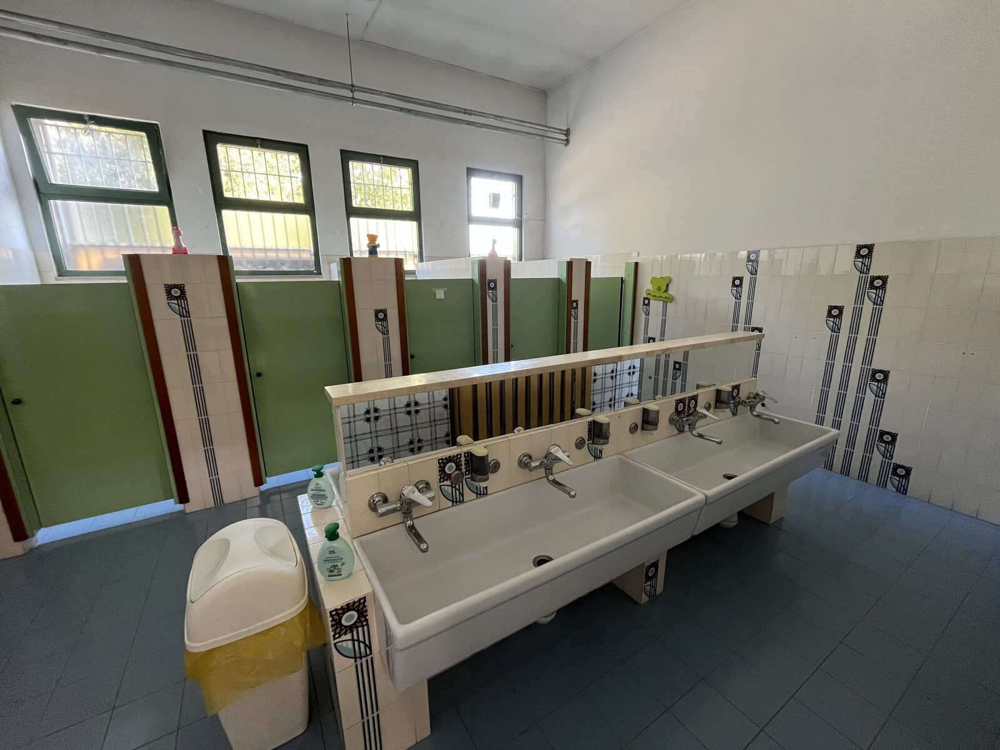
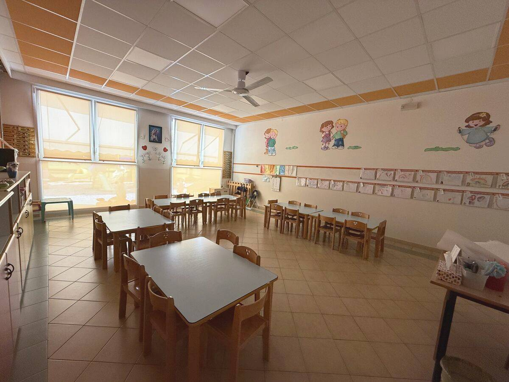
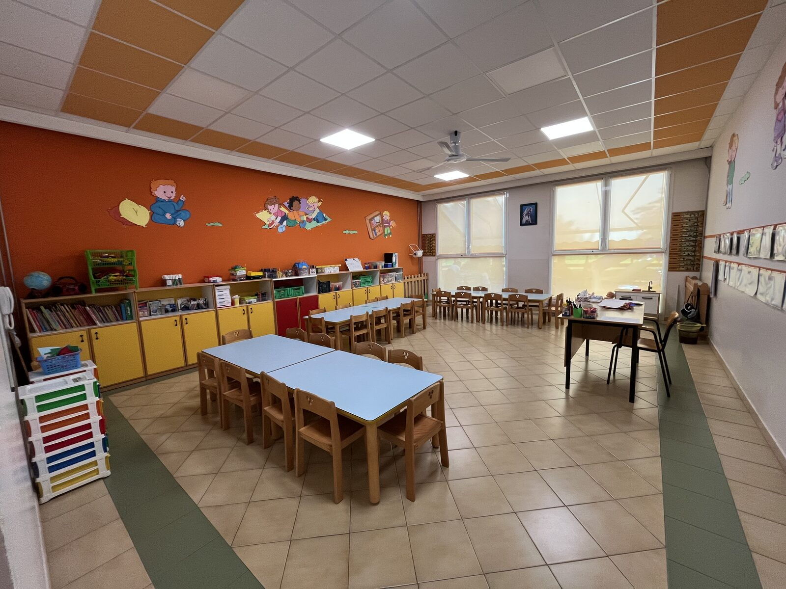
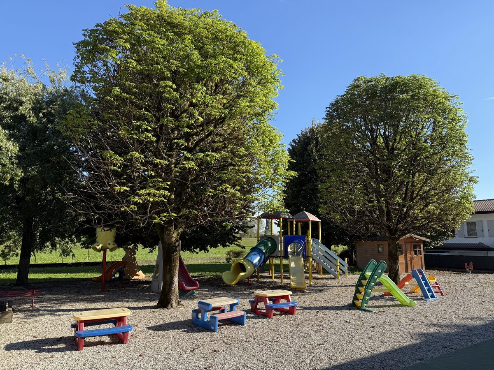

I nostri ambienti
L'ambiente è il terzo educatore, nella convinzione che la qualità degli spazi vada di pari passo alla qualità dell'apprendimento
Spazi a misura di bambino
Gli spazi della nostra scuola sono stati progettati e allestiti pensando alle esigenze dei bambini: sicurezza, comfort, stimolazione sensoriale e possibilità di esplorazione. Ampi, luminosi e curati nei minimi dettagli, favoriscono il benessere, l'autonomia, il gioco, l'apprendimento e la socializzazione.
Colori vivaci, arredi ergonomici e materiali didattici di qualità caratterizzano tutti gli ambienti, permettendo ai bambini di muoversi, esplorare e vivere le attività in modo sereno e naturale.
Disposti su un unico piano, gli spazi comprendono
- tre aule confortevoli, luminose e ben arredate
- un ampio salone per l'accoglienza, il gioco libero ed eventuali attività
- un salone dedicato al riposo dei bambini piccoli e medi
- servizi igienici a misura di bambino
- un'ampia sala da pranzo, luminosa e ben arieggiata
- un parco-giardino esterno attrezzato e curato
Galleria fotografica
Scopri i nostri spazi attraverso alcune foto


💤
🍽



